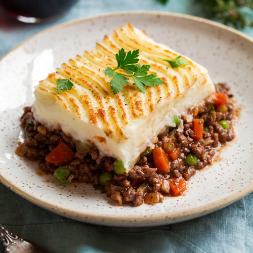

Ingredients
- 1 1/2 lb ground beef or lamb
- 1 onion, chopped
- 2 cloves garlic, minced
- 1 tbsp tomato paste
- 1 tbsp Worcestershire sauce
- 1 tsp salt
- 1/2 tsp black pepper
- 1/2 cup beef broth
- 1 1/2 cups frozen mixed vegetables (peas, carrots, green beans, corn)
- 2 lb potatoes, peeled and chopped
- 1/2 cup milk
- 1/4 cup butter
- 1/2 cup grated cheddar cheese
Instructions
- Preheat the oven to 375°F.
- In a large skillet, brown the ground beef or lamb over medium-high heat. Drain the fat and add the onion and garlic. Cook for 2-3 minutes until the onion is softened.
- Add the tomato paste, Worcestershire sauce, salt, and black pepper. Stir well and cook for 1-2 minutes.
- Add the beef broth and mixed vegetables. Bring to a simmer and cook for 5-7 minutes until the vegetables are tender and the mixture is thickened.
- Meanwhile, place the chopped potatoes in a large pot and cover with cold water. Bring to a boil and cook for 15-20 minutes until the potatoes are tender.
- Drain the potatoes and return them to the pot. Add the milk and butter and mash until smooth.
- Spread the beef or lamb mixture in the bottom of a 9x13 inch baking dish. Top with the mashed potatoes, spreading them evenly over the meat mixture.
- Sprinkle the grated cheddar cheese over the potatoes.
- Bake for 25-30 minutes until the cheese is melted and the pie is heated through.